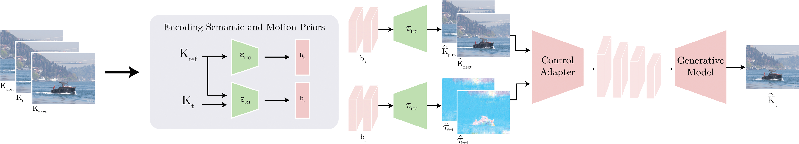
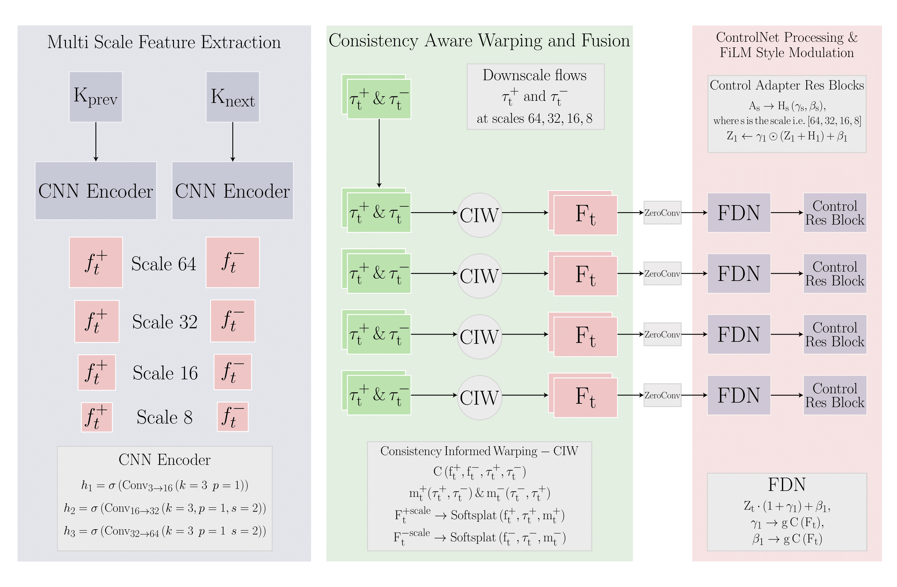
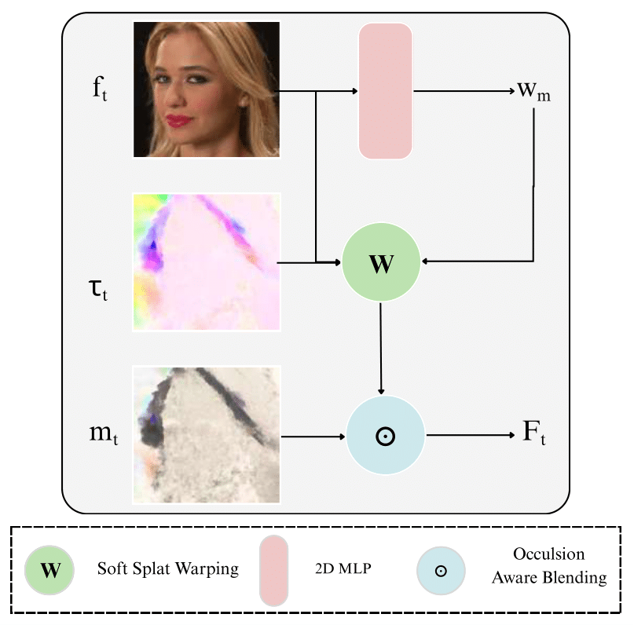
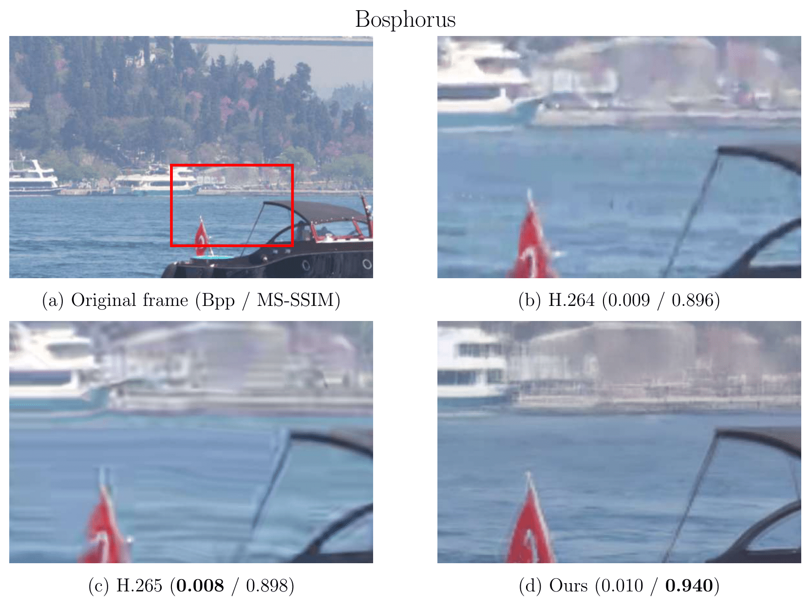

Perceptual Video Compression with Diffusion Models
Status: Completed (Master’s Research, Kyung Hee University)

Problem
Ultra-low bitrate (ULB) video delivery in the range of 0.005–0.02 bpp remains largely unsolved. Classical codecs such as H.264 and HEVC optimize for pixel-level distortion and exhibit severe perceptual degradation at these rates.
Method
I developed the first diffusion-based learned video codec capable of operating effectively in this regime. The encoder transmits only sparse, high-level semantic priors (latent keyframes and lightweight motion trajectories) while a controllable diffusion model at the decoder synthesizes temporally coherent intermediate frames.
Motion-conditioned control module
Multi-scale flow features are fused with consistency-aware warping and injected into the diffusion decoder through a ControlNet-style adapter with FiLM modulation.


Qualitative comparison

Key contributions
- Semantic-guided generative video codec operating below 0.02 bpp.
- Trajectory-aware synthesis improving temporal coherence and perceptual quality.
- Comprehensive benchmarking against H.264, HEVC/VVC, and learned codecs.